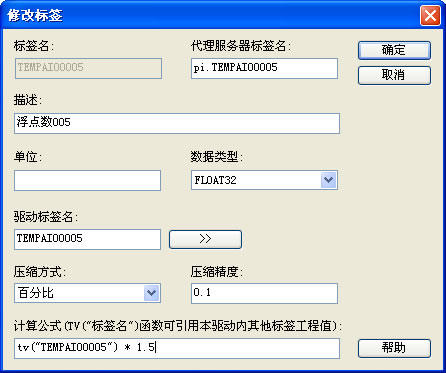
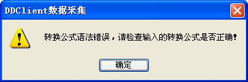
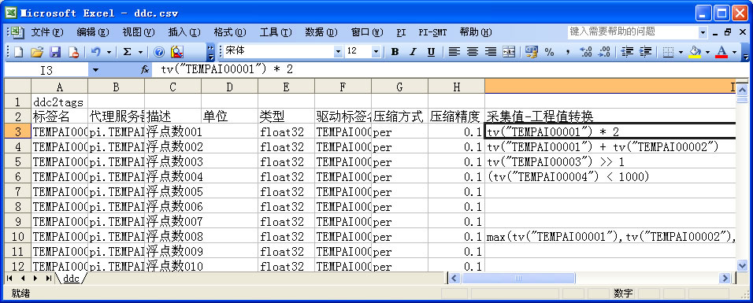

2.6 如何编写标签的计算公式 |
我们可以在DDClient界面中通过添加或修改标签对话框来编写计算公式，如下图为修改标签对话框，用户可以在计算公式编辑框中编写计算公式。

点击“确定”按钮结束计算公式编写，DDClient会检查计算公式的合法性，如果计算公式语法正确，该标签所作的修改会被保存，否则会提示如下的错误提示框，并要求用户重新编辑计算公式。

将标签导出为csv格式文件，用Excel打开进行编辑。

编辑完成后，再将该csv文件格式的标签表导入到DDClient中，这种方式适合于批量的编辑标签的计算公式。
如果其中有语法错误的标签，那么该标签将会无法导入。